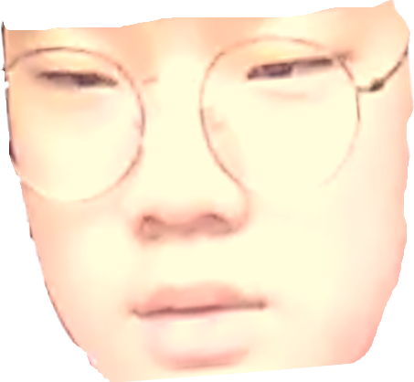
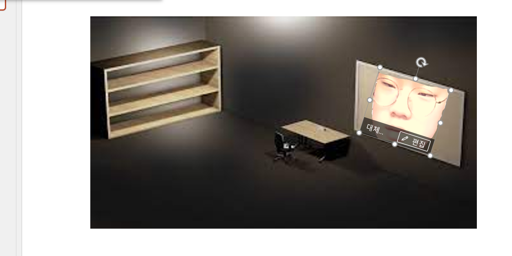

승호짤 만들기
승호짤은 승호에 얼굴이 들어있기만 해도 승호짤이니, 어떻게 만들어도 상관은 없다.다만, 포토샵등은 다루기도 어렵고 정액제도 있어서 비싸니, 여기 ppt를 이용한 해결책이 있다.
-얼굴 합성
1.승호의 얼굴사진을 저장한다.

2.승호의 얼굴사진을 합성할 사진을 ppt에 넣는다.
3.승호에 얼굴을 합성할 사진의 원하는 부분에 넣는다

4. 얼굴 사진 우클릭-그림 서식-맨 오른쪽 버튼에 들어가 다시 칠하기에 들어가 선택한다
5. 캡쳐후 완성
-특정 부위 합성
앞선 방법에 얼굴이 아닌 사진을 넣는다
-사진 재가공
1.승호의 얼굴사진을 저장한다.
2.ppt에 사진을 넣는다

3.ppt 기능을 이용해 꾸민다
4.캡쳐후 완성
-사진+특정 배경
1.승호의 얼굴사진을 저장한다.
2.ppt에 사진을 넣는다
3.ppt배경에 사진을 넣고, 캡쳐후 완성

이런 방식을 이용하여, 많은 짤을 만들수있다